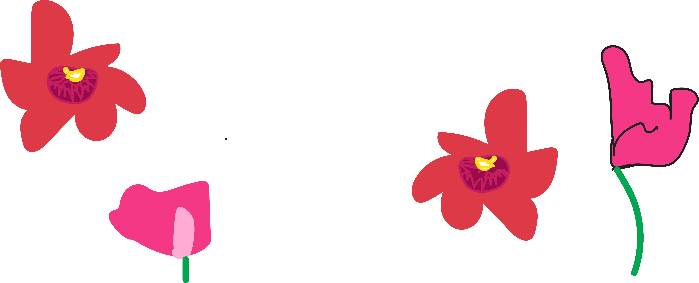

Interview with Wendy
Q&A1Q&A2
Q&A3
Q&A4
On the Meditative Power of Drawing

Wendy Hollender is a botanical artist, illustrator, author, and instructor. Her illustrations have been widely published and her work has been included in the 13th International Exhibition at Hunt Institute for Botanical Documentation and in exhibitions at the Royal Botanical Gardens, Kew, and the Smithsonian National Museum for Natural History.
Were you always drawn to botanical illustration, or were you an illustrator that discovered that this is what you were good at? How did this become your thing?
Back when I went to college and studied art, I first became a home furnishing textile designer. I was very good with color and pattern, but I could not draw realistically at all. When I went to college, which was a long time ago, they were resistant in teaching you how to draw realistically. I went to Rhode Island School of Design and it was full of incredibly talented people, many of whom already knew how to draw because they always did it their whole lives, but that wasn’t me. They taught you how to think creatively, but not to give you the necessary realistic tools. At some point a light bulb went off and I realized that all these botanical illustrators must’ve learned this technique somewhere and maybe I could learn, too. I discovered a program—I guess this was 22 years ago—at the New York Botanical Garden. I went to study there and it literally changed my path and my life right away. I said, “Oh, this is what I needed to know how to do, how to use one light source, how to understand perspective.” Plants were a great subject because, unlike people, the plants were cooperative and actually stood still. You could take the time to learn one little concept at a time.
During that time were you also being called upon to do illustrations for other people? And now you split your time between several places, right? You still work for the New York Botanical Gardens, but you also teach at other places?
Yeah, right away. The first thing I did in my home furnishing textile design was put my new botanical skills to work. I started doing a line of very botanical detailed designs for dinnerware and bedding and different kinds of home furnishing fabric. I did that right away, but then I became even more and more drawn to just the botanical illustration, so I started to launch myself in that direction. I started to get some commissions to do work for a calendar for the Riverside Park Conservancy, which was one of my earliest clients. From there I just kind of built on it and got more and more work. Yeah. About 10 years ago I moved out of Manhattan to the Hudson Valley because I really felt the need to live with the plants full time, not just go away for work and then come back to New York City. So I got a four acre piece of land that I developed with the help of my kids, who were both interested in farming and permaculture. We created gardens and a place for me to work. I converted an old horse barn into my studio and I moved up from Manhattan and relocated my whole business there. I started workshops on the farm so people can come and get the full experience of the immersion in botanical drawing, then we cook them lunch from what’s growing on the farm so you can really experience everything.
How important is it to be able to work from a live reference, as opposed to a photograph?
With my experience now I can work from photographs, but photographs actually lose a lot of information and they make you forget certain things, like structure and the three-dimensional quality and how things are attached. I will use a photograph as a tool to help me sometimes, but I always work from a real plant. The only time I don’t is if I’m doing a commercial illustration and there’s a deadline and you can’t get the actual plant in front of you—maybe something’s not blooming at that time of year or it doesn’t grow where you are. For example, cacao doesn’t grow in New York, but by now I’ve done so many drawings and studies and I have a lot of similar plants that I can look at as well. Still, I always try to work from the real plant because I do believe that the real thing helps you. Also, I just enjoy it 10 times more, so why wouldn’t I?
Do you ever draw people?
Sometimes. I’m not great with people. I’ve been working for years on this kid’s book, which is close to being ready, and I draw pollinators and sometimes little animals. So in my kid’s book, it’s a story of a mouse in my garden and me as the botanical illustrator. So I have me in it everywhere drawing, and the mouse is everywhere with the vegetables. It feels great to have gotten good at one thing. I love that part of it. Also, do you know how many plants there are to choose from? He’ll find one for me and just say, “Check this one out, mom.” My daughter makes natural dyes with plants, so she’ll say, “Mom, this sunflower makes the best yellow dye,” and then I’m like, “Oh! I need to draw it.” I like the story behind the plants as well, and that compels me to want to get to know them and to draw them. I’m very interested in just continuing to illustrate plants, especially those that people don’t know much about. When I did illustrations for a foraging cookbook, I was drawing a lot of weeds, a lot of them invasive plants that are just awesome in terms of how they grow. It’s amazing how they learn to survive, but they’re also delicious to eat and they’re nutritious and they’re just there for the taking. I’m all about showing that.